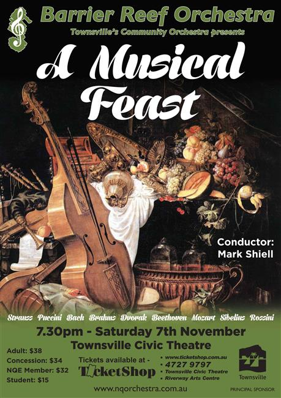

| Conductor: | Mark Shiell |
|---|---|
| Soloists: | Julie O’Connor, soprano; Julia Ramsbotham, violin; Florence Cappler-Schillington, violin. |
| Program: | |
| Dvorak: | Slavonic Dance Op. 46 No. 1 |
| Sibelius: | Finlandia |
| Bach: | Double Violin Concerto, 1st movement |
| Puccini: | O Mio Babbino Caro from Gianni Schicchi |
| J. Strauss: | Laughing Song from die Fledermaus |
| Dvorak: | Slavonic Dance Op. 46, No. 8 |
| Brahms: | Hungarian Dance No. 1 |
| Brahms: | Hungarian Dance No. 5 |
| Beethoven: | Symphony No. 5, 1st movement |
| Mozart: | Allelujiah from Exsultate Jubilate |
| Dvorak: | Song to the Moon from Rusalka |
| Rossini: | William Tell Overture |
| Concert Master: | Stephen Frewen-Lord |
|---|---|
| Rehearsal Conductor: | Benjamin Fixter |
| Violin l: | Stephen Frewen-Lord, Jasmine Lee, Florence Cappler-Schillington, Julia Ramsbotham, Paul Allen, Bianca Bacciella, Jess Regan |
| Violin ll: | Alexandra Gorton, Elena James, Suva Leitch, Stella Rapson, Stephanie Rigano, Lauren Jones |
| Viola: | Caroline Lloyd-Doolan, Emily Matthews, Aidan Fitzgerals, Michael Hanrahan, Alanna Kelly |
| Cello: | Rachel Lind, Wade Tattersall, Carole Radovanovic, Margaret Loftus, Caroline Arlett, Angelina Adcock, Gautam Abhyankar |
| Double Bass: | Olivia Adcock, Stephen Kluver |
| Piccolo: | Catherine Fisher |
| Flute: | Sally Faint, Angelina Arlett |
| Clarinet: | Monika Ward, Rianta Belford |
| Oboe: | Jasper Ly (Melbourne) |
| Bassoon: | Sarah Hill, Helen Land |
| Horn: | Andrew Ryder, Keegan Morrish, Suzanne Darrigan, Amy Gutterson |
| Trumpet: | Benjamin Fixter, Seawong Jang, Eleri Rossiter |
| Trombone: | Emi Miyosi, Leslie Croker (Charters Towers), Dylan Troyahn |
| Tuba: | Dylan Troyhan |
| Harp: | Leah Li |
| Keyboard: | Sally Frewen-Lord |
| Timpani: | Ruby Ansic |
| Auxiliary Percussion: | Jeff Lotze, Fletcher Doolan |